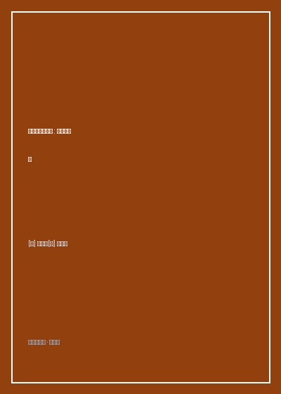

《中国艺术与文化》

总体观点
中国艺术从来不是脱离社会现实的纯粹形式玩物，其诞生与演变始终深嵌于政治权力的合法性建构、宗教祭祀礼仪、文人精英的自我认同以及城市商品经济的脉搏之中。从新石器时代的良渚玉琮、商周青铜重器，到汉唐陵墓壁画与宋元明清山水画，物质造物始终是意识形态与宇宙观的具象化容器。
打破中原单一中心主义的历史神话。全书运用丰富的前沿考古发掘资料（如三星堆祭祀坑、牛河梁红山文化、海昏侯墓），生动呈现了中华文明自新石器时代起便是多区域互动、多元文化板块碰撞交融的‘满天星斗’格局，外来中亚与丝路佛教艺术的持续输入更是不断激发出强劲的文明创新动能。
深入解构中国文人画的笔墨范式与收藏赞助机制。文人画的崛起标志着艺术从工匠制作向士大夫道德心性寄托的深刻转向。山水画中的‘平远’、‘深远’与枯笔焦墨，绝非单纯对自然山川的写实摹仿，而是士大夫在庙堂仕途与归隐田园的撕扯中构筑的心灵避难所与社会资本网络。
核心观点
-
1. 礼玉与青铜作为通神与王权权杖
商周青铜鼎彝绝非生活餐具，而是具有政治独占性的神圣礼器。铸造在青铜器表面的饕餮纹与夔龙纹，是萨满巫师沟通天地神祇的视觉媒介，而器物的体量与套数组合（如列鼎制度）则是等级森严的周礼阶级秩序的物质化显现。
妇好墓出土的数百件青铜礼器、钺戈与良渚玉璧玉琮，展现了商王室如何通过垄断高等级铜矿冶炼技术与神玉切割手艺，宣告受命于天的绝对王权合法性。 -
2. 汉代陵墓艺术的死后地下天国
汉代画像石与漆木棺椁展现了汉人对死后死后灵魂升仙的执着构想。墓葬不仅是埋葬尸骨的地下穴居，更是一座微缩的宇宙模型，通过刻画西王母、东王公、伏羲女娲与天门神兽，确保墓主在死后世界依然享有不朽的荣华富贵。
马王堆一号汉墓出土的T型帛画，自下而上分为地下幽冥、人间祭祀与天上日月神仙三大境界，精准勾勒出西汉楚地浪漫升仙信仰的宇宙图式。 -
3. 丝路交融与盛唐国际主义风格
唐代长安艺术展现了海纳百川的开阔气象。来自中亚粟特的胡腾舞乐、萨珊波斯的金银器锤揲工艺以及印度佛教造像的健陀罗风格，被大唐工匠迅速吸收杂糅，创造出体态丰腴、衣带当风的盛唐气度。
何家村遗宝中的镶金兽首玛瑙杯与鸳鸯莲瓣纹金碗，其羚羊首造型与流线型器腹带有浓厚的波斯萨珊王朝金银器风貌，彰显盛唐长安作为全球丝路都会的包容胸怀。 -
4. 宋代画院写实与文人水墨的分道扬镳
两宋艺术经历了深刻的分流：宫廷画院在宋徽宗倡导下追求极度逼真、穷极格物的细密院体工笔；而苏轼、米芾等士大夫则倡导‘逸笔草草，不求形似’的文人水墨，将书法笔意融入画作，强调表达画家的个人品藻与高洁志趣。
对比张择端《清明上河图》中对汴京漕运商铺纤毫毕现的百科全书式全景工笔描绘，与梁楷《太白行吟图》仅用寥寥数笔干墨勾勒出的狂放诗仙诗意，展现两种截然不同的审美追求。 -
5. 明清江南城市商业与艺术品消费
明代中后期江南市镇经济高度繁荣，富商巨贾争相附庸风雅，催生了艺术品市场的空前膨胀。文征明、仇英等职业与半职业画家的出现，以及版画插图小说的风靡，标志着艺术从封闭的士大夫雅集走向开放的市民公共文化生活。
仇英虽然出身漆工漆匠微贱阶层，但凭借极高超的青绿山水摹古技艺受到安国等江南大收藏家的长期包银赞助，成为明四家之一，体现商业资本对艺术身份等级的重塑力量。
全书结构
-
第一章 初始阶段：新石器时代至青铜时代早期
涵盖红山文化、仰韶彩陶、良渚玉器与二里头文化遗存，剖析中原与周边区域多中心文明起源的物质图景。
良渚反山十一号墓出土的‘琮王’与神人兽面复合纹细如发丝的刻划工艺，展现史前神权社会的巅峰造物水准。 -
第二章 商周时期：神圣礼仪与青铜帝国
深入殷墟安阳商王大墓与周原考古现场，解析青铜鼎簋铭文演进、饕餮纹谱系以及周代宗法礼制艺术规范。
分析大盂鼎长篇铭文中周天子对南宫氏册命赏赐宗族奴隶与土地的庄严辞藻，展示金文书法与封建制度的紧密捆绑。 -
第三章 帝国一统与来世构想：秦汉艺术
探访秦始皇兵马俑的军事标准化生产奇迹，解读汉代海昏侯墓金器与武氏祠汉画像石所构筑的地下孝道宇宙空间。
解析兵马俑八千陶俑铠甲、发髻与面容微小差异中的工匠工名印刻制度，揭示法家帝国‘物勒工名’严刑峻法下的标准化量产技术。 -
第四章 乱世信仰与石窟开凿：魏晋南北朝艺术
记录东晋顾恺之与王羲之书法所展现的文人自觉，追踪云冈、龙门与莫高窟早期佛教艺术的西来东渐融合轨迹。
对比云冈第20窟露天大佛具有典型中亚希腊化高鼻深目特征的犍陀罗造型，与龙门宾阳中洞北魏‘褒衣博带、秀骨清像’的士大夫南朝汉化风格演变。 -
第五章 帝国盛宴与风雅极境：隋唐五代至宋代艺术
横跨盛唐昭陵六骏、敦煌经变壁画，过渡至北宋范宽巨碑式宏伟山水与宋徽宗宣和画院的精致院体花鸟画。
深入范宽《溪山行旅图》中雨点皴对北方秦岭悬崖绝壁质感的雄浑塑造，解析全景构图如何寄托宋代理学天人合一的崇高宇宙秩序。 -
第六章 笔墨寄兴与市井回响：元明清及近代艺术
梳理赵孟頫与元四家对文人山水写意范式的定型，检视明清江南城市版画、董其昌南北宗论与晚清海派艺术对近代潮流的开启。
解析黄公望《富春山居图》中以赭石淡彩与披麻皴法所传达的江南丘陵从容韵致，展示元代士人失落政治权力后在纯净笔墨中的安顿之道。